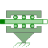

SupportFrictionCoulomb friction in support |

|
Information
This information is part of the Modelica Standard Library maintained by the Modelica Association.
This element describes Coulomb friction in support, i.e., a frictional force acting between a flange and the housing. The positive sliding friction force "f" has to be defined by table "f_pos" as function of the absolute velocity "v". E.g.
v | f ---+----- 0 | 0 1 | 2 2 | 5 3 | 8
gives the following table:
f_pos = [0, 0; 1, 2; 2, 5; 3, 8];
Currently, only linear interpolation in the table is supported. Outside of the table, extrapolation through the last two table entries is used. It is assumed that the negative sliding friction force has the same characteristic with negative values. Friction is modelled in the following way:
When the absolute velocity "v" is not zero, the friction force is a function of v and of a constant normal force. This dependency is defined via table f_pos and can be determined by measurements, e.g., by driving the gear with constant velocity and measuring the needed driving force (= friction force).
When the absolute velocity becomes zero, the elements connected by the friction element become stuck, i.e., the absolute position remains constant. In this phase the friction force is calculated from a force balance due to the requirement, that the absolute acceleration shall be zero. The elements begin to slide when the friction force exceeds a threshold value, called the maximum static friction force, computed via:
maximum_static_friction = peak * sliding_friction(v=0) (peak >= 1)
This procedure is implemented in a "clean" way by state events and leads to continuous/discrete systems of equations if friction elements are dynamically coupled which have to be solved by appropriate numerical methods. The method is described in (see also a short sketch in UsersGuide.ModelingOfFriction):
- Otter M., Elmqvist H., and Mattsson S.E. (1999):
- Hybrid Modeling in Modelica based on the Synchronous Data Flow Principle. CACSD'99, Aug. 22.-26, Hawaii.
More precise friction models take into account the elasticity of the material when the two elements are "stuck", as well as other effects, like hysteresis. This has the advantage that the friction element can be completely described by a differential equation without events. The drawback is that the system becomes stiff (about 10-20 times slower simulation) and that more material constants have to be supplied which requires more sophisticated identification. For more details, see the following references, especially (Armstrong and Canudas de Wit 1996):
- Armstrong B. (1991):
- Control of Machines with Friction. Kluwer Academic
Press, Boston MA.
- Armstrong B., and Canudas de Wit C. (1996):
- Friction Modeling and Compensation.
The Control Handbook, edited by W.S.Levine, CRC Press,
pp. 1369-1382.
- Canudas de Wit C., Olsson H., Åström K.J., and Lischinsky P. (1995):
- A new model for control of systems with friction.
IEEE Transactions on Automatic Control, Vol. 40, No. 3, pp. 419-425.
Parameters (5)
| useSupport |
Value: false Type: Boolean Description: = true, if support flange enabled, otherwise implicitly grounded |
|---|---|
| useHeatPort |
Value: false Type: Boolean Description: = true, if heatPort is enabled |
| v_small |
Value: 1e-3 Type: Velocity (m/s) Description: Relative velocity near to zero (see model info text) |
| f_pos |
Value: [0, 1] Type: Real[:,2] Description: Positive sliding friction characteristic [N] as function of v [m/s] (v>=0) |
| peak |
Value: 1 Type: Real Description: Peak for maximum friction force at v==0 (f0_max = peak*f_pos[1,2]) |
Connectors (4)
| flange_a |
Type: Flange_a Description: (left) driving flange (flange axis directed into cut plane, e. g. from left to right) |
|
|---|---|---|
| flange_b |
Type: Flange_b Description: (right) driven flange (flange axis directed out of cut plane) |
|
| support |
Type: Support Description: Support/housing of component |
|
| heatPort |
Type: HeatPort_a Description: Optional port to which dissipated losses are transported in form of heat |
Used in Examples (2)
|
Modelica.Mechanics.Translational.Examples Use of model Stop |
|
|
Modelica.Mechanics.Translational.Examples Demonstrate the modeling of heat losses |